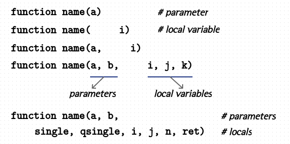

Functions
awk 는 기본적으로 데이터 처리를 위해 사용할 수 있는 string 함수, numeric 함수 같은 여러 가지 유용한 built-in 함수들을 제공합니다. 이 함수들에 대해서는 뒷부분에서 따로 알아보기로 하고 여기서는 사용자가 정의하여 사용할 수 있는 함수에 대해서 알아보겠습니다.
awk 에서 함수에 인수가 전달되는 방식은 다음과 같습니다.
scalar 변수 : passing by value
array 변수 : passing by reference
$ awk 'BEGIN { v = 100; f(v); print v } function f(p) { p = 200 }'
100
$ awk 'BEGIN { v[1] = 100; f(v); print v[1] } function f(p) { p[1] = 200 }'
200
사용자 함수 정의
함수를 정의할 때는 function or func 키워드를 사용할 수 있고 함수 정의는 블록 밖에서 해야 됩니다.
BEGIN, END 블록이나 { } 내에서 하면 오류가 발생합니다.
awk 는 실행하기 전에 먼저 전체 코드를 읽어들여 해석하므로 함수의 위치는 순서에 관계없이 작성할 수 있습니다.
구 버전에서는 함수명과 이어지는 괄호 사이에 공백이 있으면 오류가 발생할 수 있습니다.
#!/usr/bin/awk -f
BEGIN {
FS = "\t";
}
{
log_level = $2;
}
(log_level == "ERROR") {
print red($0)
}
(log_level == "WARN") {
print yellow($0)
}
END {
}
function red(str) {
return "\033[1;31m" str "\033[0m"
}
function yellow(s) {
return "\033[1;33m" str "\033[0m"
}
local 변수를 설정하는 방법
awk 는 local 변수 설정을 함수의 매개변수를 설정하는 ( ) 에서 같이 합니다.
따라서 매개변수와 로컬변수를 구분하기 위해
관례적으로 다음과 같이 공백을 두어 작성합니다.
왼쪽에 매개변수가 위치하고 오른쪽에 로컬변수가 위치합니다.
매개변수만 사용될 경우는 첫 번째 처럼 따로 공백이 필요 없지만
로컬변수만 사용될 경우는 두 번째와 같이 앞부분에 공백을 두어 로컬변수 임을 나타내면 되겠습니다.

return
함수 실행을 종료해야 되거나 값을 전달해야 될 경우 return 문을 사용할 수 있습니다.
return [expression]
Indirection
@ 문자를 이용하여 간접 호출도 사용할 수 있습니다.
$ awk 'BEGIN {
call("foo", 100)
call("bar", 200)
}
function call(fun, num) { @fun(num) }
function foo(n1) { print "Im foo :", n1 }
function bar(n1) { print "Im bar :", n1 }
'
Im foo : 100
Im bar : 200
Recursion 사용시 주의할 점
awk 는 함수 재귀 호출시 매 호출마다 새로 레코드를 읽어들여 사용한다면
기본적으로 현재 함수에서 사용 중인 $0,$1,$2,...NF,NR 값들이 유지가 안됩니다.
따라서 return 후에도 정상적으로 기존 값을 사용하려면 먼저 함수 호출전에
local 변수에 저장해 놓는 것이 필요합니다.
그리고 return 후에는 저장한 local 변수값을 다시 $0 에 대입해 사용하면 됩니다.
$ cat sample.txt
111 222 333
444 555 666 AAA BBB
777 888 999
# NR 값도, NF 값도, 각 필드 value 도 정상적으로 표시되지 않는다.
$ awk 'BEGIN{ readf() }
function readf( i ) {
while ( getline > 0 ) {
while ( ++i <= NF ) {
print "record " NR " : field " i " : " $i
readf()
}
}
}' sample.txt
record 1 : field 1 : 111 # AAA, BBB 값은 표시도 안된다.
record 2 : field 1 : 444
record 3 : field 1 : 777
record 3 : field 2 : 888
record 3 : field 3 : 999
record 3 : field 2 : 888
record 3 : field 3 : 999
record 3 : field 2 : 888
record 3 : field 3 : 999
------------------------------------------------------
# 먼저 $0, NF, NR 값을 local 변수에 저장후 함수를 호출
$ awk 'BEGIN{ readf() }
function readf( i, z, nr ) {
while ( getline > 0 ) {
z = $0; nr = NR
while ( ++i <= NF ) {
print "record " NR " : field " i " : " $i
readf()
# return 후에는 $0 = z 를 해줘야 함수 호출전 상태로 $1,$2,...NF 값이 설정된다.
$0 = z; NR = nr
}
}
}' sample.txt
record 1 : field 1 : 111
record 2 : field 1 : 444
record 3 : field 1 : 777
record 3 : field 2 : 888
record 3 : field 3 : 999
record 2 : field 2 : 555
record 2 : field 3 : 666
record 2 : field 4 : AAA
record 2 : field 5 : BBB
record 1 : field 2 : 222
record 1 : field 3 : 333
awk 는 C/C++ 와 달리 recursion 횟수에 제한이 없습니다.
다음 명령을 실행해보면 메모리 사용량이 계속해서 증가되는 것을 볼 수 있습니다.
$ awk 'BEGIN { i=0; f(1,2,3,4); }
function f(a,b,c,d) { a=b=c=d=1; print "recursion : " i++; f(1,2,3,4) }'
. . .
. . .
recursion : 543784
recursion : 543785
recursion : 543786
recursion ^C # Ctrl-c 종료
다음은 recursion 을 이용해 자손 프로세스를 출력하는 예입니다.
# $1 는 PID, $4 는 PPID
$ awk -v PPID=`pidof gdm3` -v FPAT='[^ ]+|\\([^\\)]*\\)' '
{ a[$1] = $4 } END{ print PPID; desc(PPID) }
function desc( ppid, i) {
for ( i in a ) { if ( a[i] == ppid ) { print i; desc(i) }}
}
' /proc/[0-9]*/stat | xargs ps f
PID TTY STAT TIME COMMAND
1510 ? Ssl 0:00 /usr/sbin/gdm3
1679 ? Sl 0:00 \_ gdm-session-worker [pam/gdm-autologin]
1882 tty2 Ssl+ 0:00 \_ /usr/lib/gdm3/gdm-x-session --register-session ...
1890 tty2 Sl+ 5:26 \_ /usr/lib/xorg/Xorg vt2 -displayfd 3 -auth ...
2380 tty2 S+ 0:00 \_ /bin/sh /usr/bin/startkde
2586 ? Ss 0:00 \_ /usr/bin/ssh-agent /usr/bin/im-launch ...
3106 tty2 S+ 0:00 \_ kwrapper5 /usr/bin/ksmserver